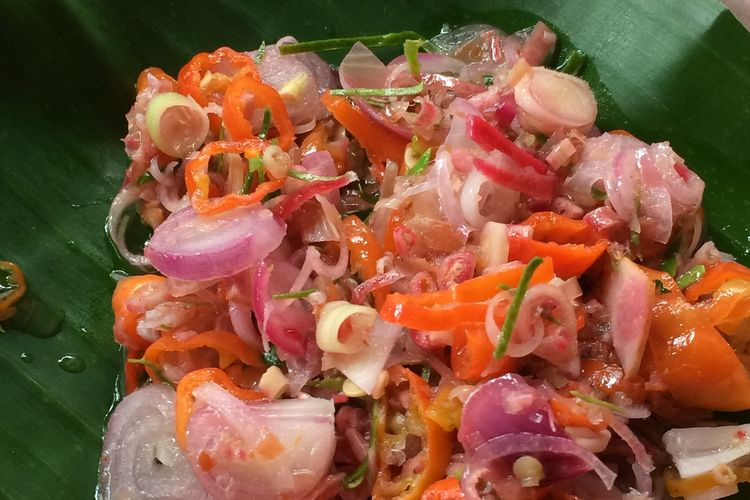
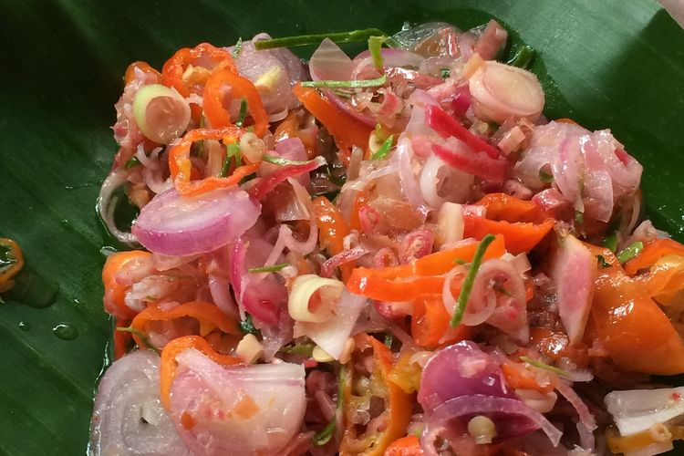

Lemon
Lemon adalah buah dari pohon lemon (Citrus limon) yang dikenal dengan rasa asamnya yang khas. Buah lemon memiliki kulit tebal dan berwarna kuning cerah, serta daging yang berair dan asam. Lemon umumnya digunakan sebagai bahan masakan dan minuman untuk memberikan rasa segar dan asam yang khas.


 
